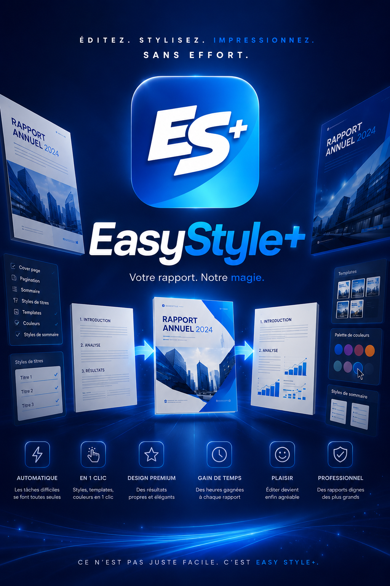

01Starting point
Choose a document type
Report, letter, memo, internal note: every document type is waiting in Generate, each with its own templates and color themes.

EasyStyle+ — the story of a document
A report to format, a theme to pick, a table of contents to fine-tune — here's how a document comes to life, step by step.
Smoother. More enjoyable.
Even while editing a report on a Sunday night.
It's not just easy — it's EasyStyle+.
Report, letter, memo, internal note: every document type is waiting in Generate, each with its own templates and color themes.
A template. A color theme. Pick both in one click to set the document's visual foundation before writing a single word.

Drop in an existing text file, or open the advanced editor to write on the spot. The content arrives exactly the way you want it.

Blank page or pre-filled example? Starting from an example gives you a head start — the structure is already there, all that's left is to adapt it.

One click to change styles, another to go back. Comparing results becomes second nature, not a chore.


The structure stays, the mood changes. One color theme is enough to give the document a whole new look.


Title and table-of-contents styles match the chosen theme, so the document stays consistent from the first heading to the last page.


The result is better than what I used to make editing by hand — and this time, I did it almost without editing at all.

Editing has never been this enjoyable.
Start a document →YOUR TURN
Three clicks: document, template, theme. See what happens.
Click the document to start.
Template Skyline, theme Blue Corporate — ready in one click.
En vidéo
Chaque étape expliquée en 30 secondes.
Thème → Template → Éditeur.
Choisissez votre type de document.
Importez un fichier ou testez un exemple.
Affinez votre texte avec style.